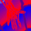
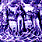

Online versions of arts and media publications...
The Art Magazine from the Western Front
The Magazine of the New Media
An international electronic review of books on theory, technology and culture
Contents


Compass
Home -
What's New -
Findex -
Welcome -
AboutNode -
The WebWeavers -
NodeMap -
System Help
ANIMA: Spectrum Index - Created: 01/15/94 Modified: 09/03/94, Version 1.1 - Image Totals: 34k